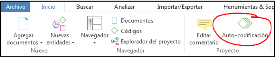
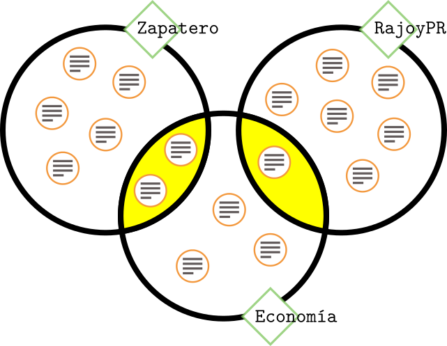

Análisis con Atlas.ti 8
Juan Muñoz
Universitat Autònoma de Barcelona
juan.munoz@uab.cat
http:/juan.psicologiasocial.eu

¿Qué permite?

- Organización e integración
- Datos multimedia
- Búsqueda y recuperación
- Vinculación
- Representación gráfica
- Trabajo en equipo

Ejemplo: códigos-categorías-temas
 Graneheim & Lundman (2004, p. 108)
Graneheim & Lundman (2004, p. 108)
Narrativas sobre hipoglucemia
Proceso de análisis

Fases del análisis (Atlas.ti)

Estrategias trabajo en equipo

Unir proyectos

Añadir documentos


Descargar y descomprimir http://bit.ly/2oJUWCm
- Inicio > Agregar documentos > Agregar archivos
- Gestor de documentos > Crear comentarios de documentos
Crear memos-anotaciones

- Crear una memo
- Etiquetarla como “Proceso”
- Describir los pasos dados hasta el momento
- Guardar
- Crear una memo “Objetivos”
Ejercicio: Crear/abrir copia
- Crear una copia de la UH
- Importat la copia (de un/a compañero/a)
Autocodificación

Ejercicio autocodificación

- Autocodificar participantes
- Autocodificar Rajoy-LO (líder de la oposición)
- Autocodificar Rajoy-PR (presidente)
Agrupar

Ejercicio: Grupos de documentos

| Grupo | Contenido |
|---|---|
| Congreso | Control-Congreso |
| Senado | Control-Senado |
| IX LEG. | -2011 |
| X LEG. | -2012 |
Grupos “inteligentes”
| CONGRESO | SENADO | |
|---|---|---|
| IX LEG. | Control-Congreso-2011 | Control-Senado-2011 |
| X LEG. | Control-Congreso-2012 | Control-Senado-2012 |
Agrupación de códigos
| NACIONALES | AUTONÓMICOS | |
|---|---|---|
| IZQUIERDA | IU PCE PSOE |
Amaiur BNG ERC ICV PSC |
| DERECHA | PP UPD |
CC CiU PNV |
- Crear grupos de códigos
- Crear “grupos”inteligentes"
Reducción
[En la investigación cualitativa] el reto es dar sentido a una cantidad masiva de datos, reducir el volumen de información, identificar pautas significativas, y construir un marco para comunicar la esencia de lo que revelan los datos.
Patton (1990, pp. 371–372)

“El gato”

Estrategias de codificación

Ejercicio: Segmentación / Codificación
- Crear citas libres
- Crear códigos libres
- Utilizar otras opciones de codificación
Comparación constante


Friese (2011)


Tipos de Relaciones

Jerarquías de códigos

Jerarquías de códigos

Redes temáticas

Relaciones entre códigos

Relaciones entre códigos

Buscar texto

Consultas

Consultas: Operadores Booleanos

Construcción de una consulta
“Todas las citas codificadas como ‘Economía’, realizadas por Rajoy o por Zapatero”


Operadores Semánticos

Operadores de Proximidad


Ejemplo consulta

Analizar